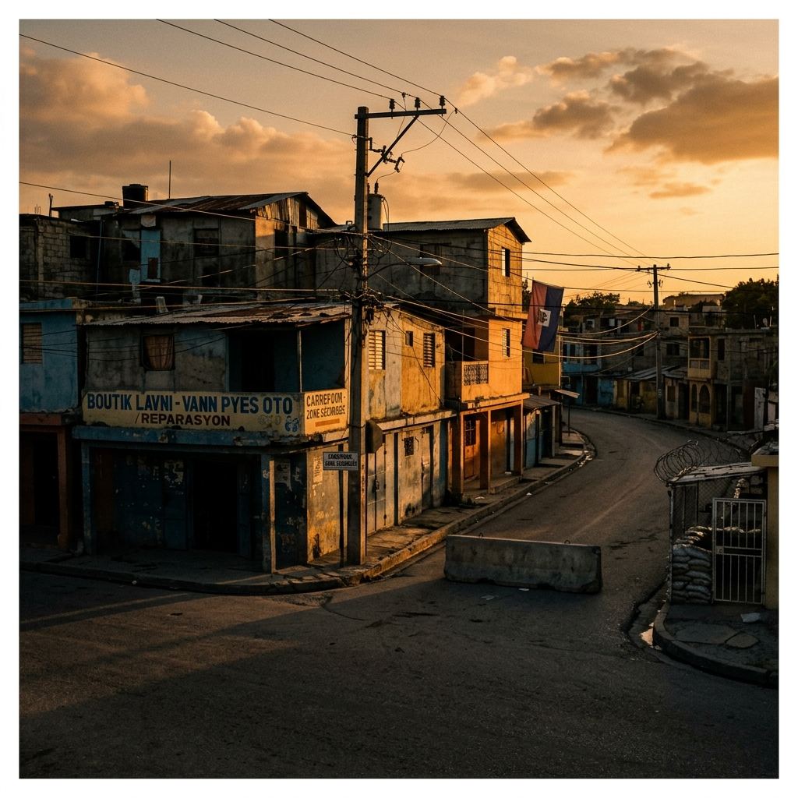

EN UNE

Analyse d'un changement de paradigme global où l'élite intellectuelle reprend les rênes de l'avenir institutionnel.



« L'interview Post. des gens connus », c'est le podcast où des personnalités se livrent au micro, comme vous ne les avez jamais entendues. Écoutez les récits et confidences d'acteurs, de leaders et d'artistes qui bousculent les standards de la culture, du sport ou de la politique.
Je suis Alexia Duchêne et en tant que cheffe à la télévision ou sur les réseaux sociaux, je me bats pour que l'on sache comment on cuisine et quel impact ça a. Manger, c'est des milliards de dollars de chiffre d'affaires et ça mérite de se demander vers quelles tendances on se dirige dans notre histoire.
Je suis Mina Soundiram, journaliste chez Post., et mon métier, c'est de raconter des histoires. Pour moi, un des meilleurs endroits pour les trouver, c'est les réseaux sociaux. Du voyage au bout du monde aux retrouvailles inattendues, je vous raconte ce qu'ils ont vécu derrière leur écran.
Découvrez ce qui se passe vraiment derrière les portes closes des ministères et grandes institutions du pays.
Plongeon au cœur du marché haïtien pour comprendre les défis quotidiens des entrepreneurs et producteurs.
Comment l'intelligence artificielle et la digitalisation transforment aujourd'hui le tissu social du Grand Nord.